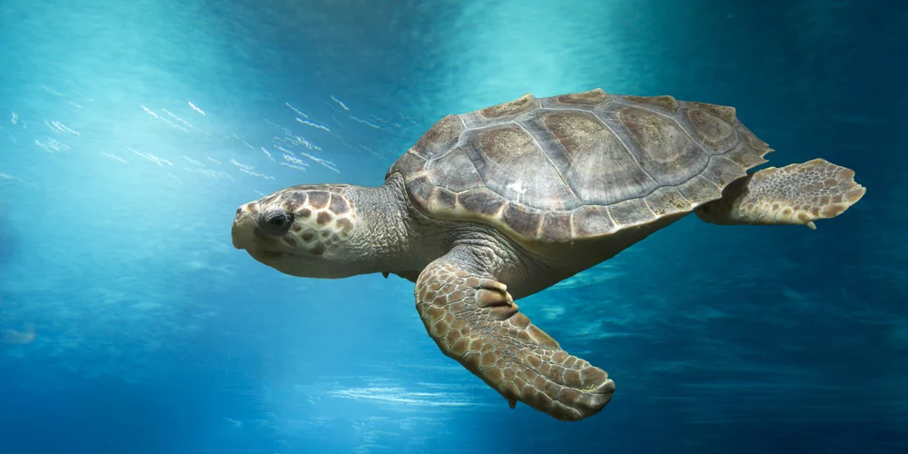
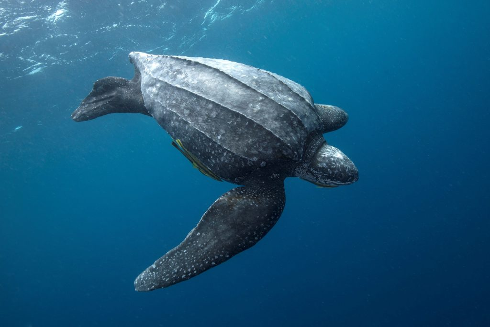
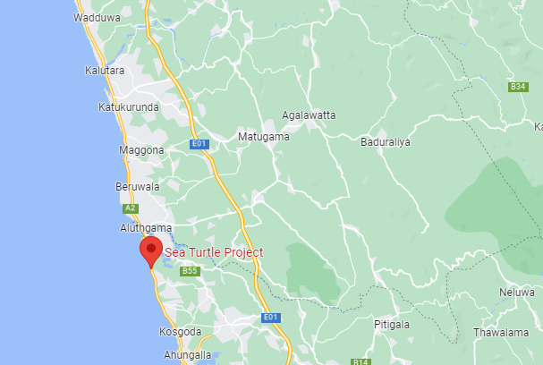
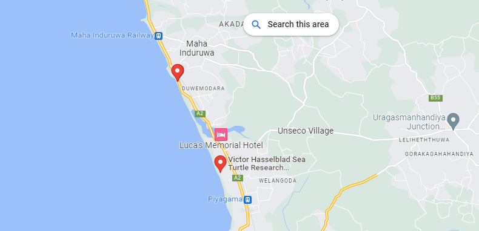
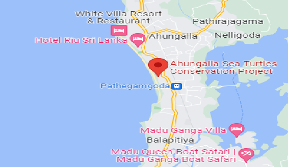
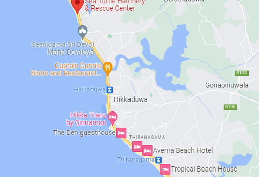

<!DOCTYPE html>
<html>
<head>
<meta name="viwe point" ::content="with=device-width,initical-scale=1.0">
<title>TURTLES OF SRI LANKA</title>
<link rel="stylesheet" href="./style.css">
</head>
</html>
<body>
    <div class="div-bg">
        <nav>
            <div class="nav-links" id="test">
               <ul>
                   <li><a href="./index.html">HOME</a></li>
                   <li><a href="#">CATEGORIES</a></li>
                   <li><a href="./thirdpage.html">THREAT</a></li>
                   <li><a href="./fourthpage.html">HIKKADUWA HATCHERY</a></li>
                   <li><a href="./five.html">OTHER HATCHERIES</a></li>
                   <li><a href="#">PURCHASE AND DONATIONS</a></li>
               </ul>
            </div>
       </nav> 
     
       <!-------TURTLE CATEGORIES--------->

  <section class="TURTLE CATEGORIES">

    <h1 style="color: aliceblue;">TURTLE CATEGORIES</h1>
    <p><h3>
        Sri Lanka is one of those countries in the world that could boast of having the 3 major types of chelonians, the freshwater terrapins, land tortoises and marine turtles.
    </h3></p>

    <div class="row">
    <div class="world-col">
    <h2>Hawksbill sea turtle</h2>
    
    <P><h3>Hawksbill sea turtle (Eretmochelys imbricata) is a critically endangered sea turtle belonging to the family Cheloniidae. It is the only extant species in the genus Eretmochelys. The species has a global distribution, that is largely limited to tropical and subtropical marine and estuary ecosystems.<br>
        The hawksbill's appearance is similar to that of other marine turtles. In general, it has a flattened body shape, a protective carapace, and flipper-like limbs, adapted for swimming in the open ocean. E. imbricata is easily distinguished from other sea turtles by its sharp, curving beak with prominent tomium, and the saw-like appearance of its shell margins. Hawksbill shells slightly change colors, depending on water temperature. While this turtle lives part of its life in the open ocean, it spends more time in shallow lagoons and coral reefs.</h3></P>
    <div class="world-col">
    <h2>Loggerhead sea turtle</h2>
    
    <P><h3>The loggerhead sea turtle (Caretta caretta) is a species of oceanic turtle distributed throughout the world. It is a marine reptile, belonging to the family Cheloniidae. The average loggerhead measures around 90 cm (35 in) in carapace length when fully grown. The adult loggerhead sea turtle weighs approximately 135 kg (298 lb), with the largest specimens weighing in at more than 450 kg (1,000 lb). The skin ranges from yellow to brown in color, and the shell is typically reddish brown. No external differences in sex are seen until the turtle becomes an adult, the most obvious difference being the adult males have thicker tails and shorter plastrons (lower shells) than the females.</h3></P>
    <div class="world-col">
    <h2>Green sea turtle</h2>
    
    <P><h3>The green sea turtle (Chelonia mydas), also known as the green turtle, black (sea) turtle or Pacific green turtle,is a species of large sea turtle of the family Cheloniidae. It is the only species in the genus Chelonia.Its range extends throughout tropical and subtropical seas around the world, with two distinct populations in the Atlantic and Pacific Oceans, but it is also found in the Indian Ocean.The common name refers to the usually green fat found beneath its carapace, not to the color of its carapace, which is olive to black.<br>
        The dorsoventrally flattened body of C. mydas is covered by a large, teardrop-shaped carapace; it has a pair of large, paddle-like flippers. It is usually lightly colored, although in the eastern Pacific populations, parts of the carapace can be almost black. Unlike other members of its family, such as the hawksbill sea turtle, C. mydas is mostly herbivorous. The adults usually inhabit shallow lagoons, feeding mostly on various species of seagrasses.The turtles bite off the tips of the blades of seagrass, which keeps the grass healthy.</h3></P>
    <div class="world-col">
    <h2>Leatherback sea turtle</h2>
    
    <P><h3>The leatherback sea turtle (Dermochelys coriacea), sometimes called the lute turtle or leathery turtle or simply the luth, is the largest of all living turtles and the heaviest non-crocodilian reptile, reaching lengths of up to 1.8 metres (5 ft 11 in) and weights of 500 kilograms (1,100 lb).It is the only living species in the genus Dermochelys and family Dermochelyidae. It can easily be differentiated from other modern sea turtles by its lack of a bony shell; instead, its carapace is covered by oily flesh and flexible, leather-like skin, for which it is named.</h3></P>
    <div class="world-col">
    <h2>Olive ridley sea turtle</h2>
    
    <P><h3>The olive ridley sea turtle (Lepidochelys olivacea), also known commonly as the Pacific ridley sea turtle, is a species of turtle in the family Cheloniidae. The species is the second-smallest and most abundant of all sea turtles found in the world. L. olivacea is found in warm and tropical waters, primarily in the Pacific and Indian Oceans, but also in the warm waters of the Atlantic Ocean.
        This turtle and the related Kemp's ridley turtle are best known for their unique synchronised mass nestings called arribadas, where thousands of females come together on the same beach to lay eggs. </h3></P>
    </div>
    </div>
    </div>
    </div>
    </div>
    </div>
    <br>
    <br>

    <body>
      <div class="grid-container">
         <div class="grid-item"><h2>Green sea turtle</h2></div>
         <div class="grid-item">length:1M<br>weight:250kg<br>Maturlty Age:70 years</div>
         <div class="grid-item"> <a></a>
            <map name="#Hikka">
            <area shape="rect" coords="34,44,270,350" alt="Hikkaduwa" href="https://goo.gl/maps/VwKB6HrsMyS1HmMz8">  
          </map> </div>  
         <div class="grid-item"><h2>Hawksbill sea turtle</h2></div>
         <div class="grid-item">length:0.9M<br>weight:50kg<br>Maturlty Age:30 years</div>
         <div class="grid-item"><a></a> 
            <map name="#Hikka">
            <area shape="rect" coords="34,44,270,350" alt="Hikkaduwa" href="https://goo.gl/maps/FadMw3DjnzNGZeJk9">  
          </map></div>   
         <div class="grid-item"><h2>The loggerhead turtle</h2></div>
         <div class="grid-item">length:1M<br>weight:160kg<br>Maturlty Age:9-20 years</div>
         <div class="grid-item"> <div class="grid-item"><a></a> 
            <map name="#Hikka">
            <area shape="rect" coords="34,44,270,350" alt="Hikkaduwa" href="https://goo.gl/maps/W2cPD1WJZqJN7PUo8">  
          </map></div></div>   
         <div class="grid-item"><h2>The leatherback sea turtle</h2></div>
         <div class="grid-item">length:2M<br>weight:250-700kg<br>Maturlty Age:9-20 years</div>
         <div class="grid-item"><a></a> 
            <map name="#Hikka">
            <area shape="rect" coords="34,44,270,350" alt="Hikkaduwa" href="https://goo.gl/maps/qyY8qD37EMCgyqXk9">  
          </map></div>  
         <div class="grid-item"><h2>Olive ridley sea turtle</h2></div>
         <div class="grid-item">length:0.7M<br>weight:45kg<br>Maturlty Age:20-30 years</div>
         <div class="grid-item"><a></a> 
            <map name="#Hikka">
            <area shape="rect" coords="34,44,270,350" alt="Hikkaduwa" href="https://goo.gl/maps/or3ejVgWoPpGs3mp7">  
          </map></div> 
       </div>
       
       </body>
       <div class="wrapper">
         <div class="button">
            <div class="icon">
               <i class="fab fa-facebook-f"></i>
            </div>
            <span>Facebook</span>
         </div>
         <div class="button">
            <div class="icon">
               <i class="fab fa-twitter"></i>
            </div>
            <span>Twitter</span>
         </div>
         <div class="button">
            <div class="icon">
               <i class="fab fa-instagram"></i>
            </div>
            <span>Instagram</span>
         </div>
         <div class="button">
            <div class="icon">
               <i class="fab fa-linkedin"></i>
            </div>
            <span>linkedin</span>
         </div>
         <div class="button">
            <div class="icon">
               <i class="fab fa-youtube"></i>
            </div>
            <span>YouTube</span>
         </div>
      </div>
    